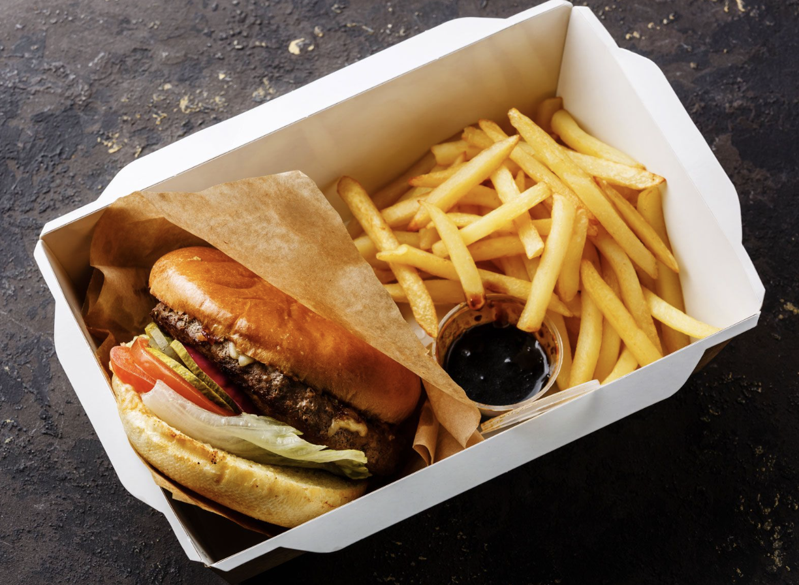
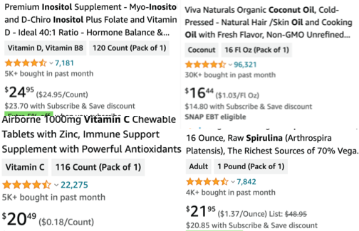
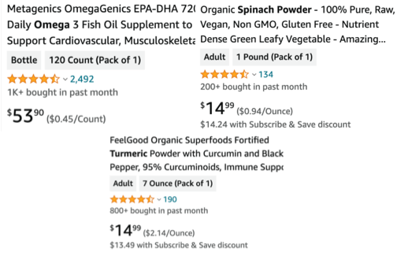
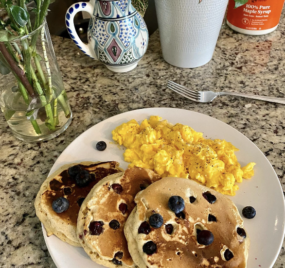

Advertorial
Hey love! I'm Nicole from Denver, and I've been where you might be now…
After shedding tons of weight myself, I became a wellness coach, driven by the passion to share what I learned.
I get it – weight loss can be tough, but it's totally doable. I'll be with you every step of the way, guiding you through workouts, healthy eating, and all the little victories in between. Ready to start this exciting journey together? Drop me a line, and let's get moving towards a happier, healthier you!
Want to see proof? Here are some of my clients and progress pictures.
Derek from California, lost 49lbs in 6 months…
Jessica from Minnesota, lost 27lbs in just 5 weeks! You go girlie!!! I'm so proud of you.
Melissa lost 32lbs in 7 weeks of work... Look!
Look… Ok, now it's time for me to put my “science” hat on!
A new study reveals that 95% of Americans have tried to lose weight and only 14% have been able to. Why is this? Metabolism.
Here’s a not-so-secret fact: our metabolism significantly influences our body’s ability to burn fats and lose weight. If your metabolism isn't functioning at its optimum, you're pushing a rock up a hill. It's time to let science work for you instead of against you.
Have you ever had a heavy meal…
And felt so tired and slow afterwards? This is a sign of a slow metabolism.
Your “Metabolism” is the speed at which you convert all that food into energy… Energy to walk, exercise, speak, run, and to do the background process of burning fat.
You know, losing weight can be a lot like driving a car. Just like a car when the speed is too low, the engine can stall out. That's sometimes what happens to our metabolism, and it can throw our weight loss journey into a tailspin.
But guess what? I've figured out how to shift those gears and rev up that metabolic engine.
If you’ve ever felt like losing weight has been an uphill battle, you need to try the below powerful natural ingredients. I’m going to show you why you need them and how they work.
Getting all of these superfoods into your diet sounds great, but it’s a challenge to ensure optimal doses… Every day you have to measure everything out… Not to mention, the prices… Can you believe they’re charging this much?
And you have to buy all of them...
If I ordered all of them, it’d cost me $167.71...Wow. Does that even include shipping?
This is where I want to promote my friends over at LeanGreens.
Just like me, I take two LeanGreen capsules before breakfast and another after dinner. So I can eat stuff like this! (Yum.)
Their proprietary formula works around the clock, supporting your metabolism, burning fats, and paving the way for a leaner, healthier you...
All of the above supplements that cost $167.71 on Amazon, you can get from LeanGreens for just $47.99 for an entire Month of supplies!
The journey to your weight loss goals no longer has to be a tedious uphill battle.
With LeanGreen, it’s a convenient part of your daily routine. Allow science to accelerate your progress. Empower your metabolism. Embrace LeanGreen.
(Btw I know supplies are limited because of their summer sale...)
Kickstart your journey to a healthier, leaner you today. Your future self will thank you!
See you soon on your journey,
Nicole Pounds, Your Wellness Coach Since 2017